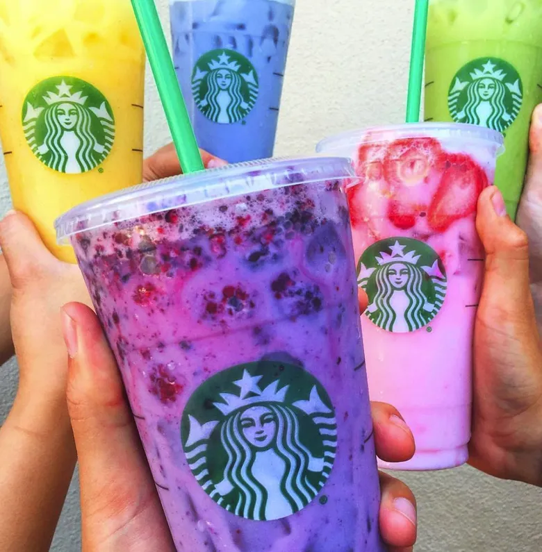

RECEITAS NOVAS DOS NOSSOS DRINKS
Brisa de Limão
O drinque saudável perfeito, este elixir combina ervas, minerais e vitaminas com um toque de limão em uma maravilha cítrica e suave, que manterá seu sistema imunológico perfeito dia e noite.
Chá de Resfriamento
Não é nosso chá tradicional,mas esse elixir mistura mate com temperos chai e junta uma pitada de chocolate extra para um sabor de cafeína no gelo.
Bebida Negra do Cérebro
Quer turbinar seu cérebro? Experimente nosso elixir Bebida Negra do Cérebro, feita com chá de oolong negro e apenas um toque de expresso. Seu cérebro agradecerá a turbinada.